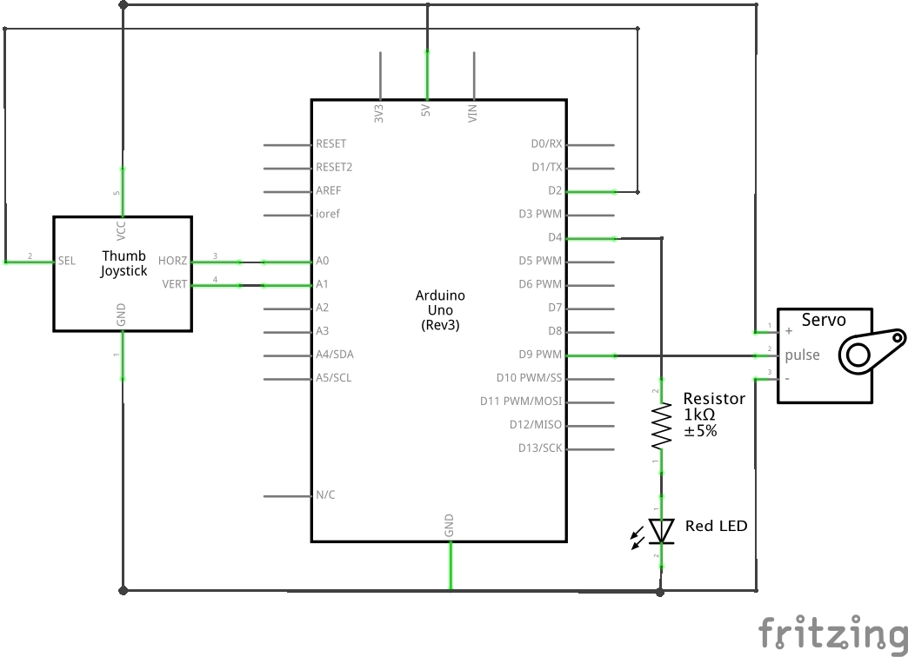
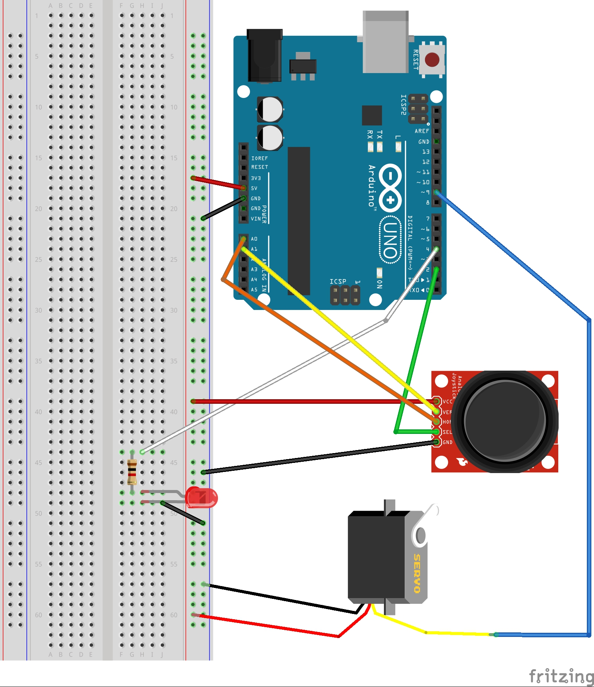

Colleen Carroll's Assignment 5!
I used a joystick to move a servo left and right. A red LED indicates when the servo has reached its max and min. Clicking the joystick switch returns the servo to center.
Operation

Schematic

Circuit
Firmware
/* A5 - Colleen Carroll
* Moves a servo left and right according to the input from a joystick.
* A red LED indicates when the servo has reached its max and min.
* The joystick switch returns the servo to center.
*/
// invoke the servo library
#include <Servo.h>
// create servo object to control a servo
Servo myServo;
// intialize servo value to be in the center
int servoVal = 90;
// initialize the IO pins
int xPin = A0;
int yPin = A1;
int servoPin = 9;
int ledPin = 4;
int switchPin = 2;
/* Runs once to setup
*/
void setup() {
// initialize the serial output
Serial.begin(9600);
// attach the servo on pin 9 to the servo object
myServo.attach(servoPin);
// set the switch pin to be an input, use internal pullup resistor so that
// the input pin isn't floating
pinMode(switchPin, INPUT_PULLUP);
// set the LED pin to be an output
pinMode(ledPin, OUTPUT);
}
/* Loops forever and ever as long as the board has power.
*/
void loop() {
// set the LED to be off in between each push of the joystick
digitalWrite(ledPin, LOW);
// read the x and y position of the joystick
// y is not technically needed but we'll print it for good measure
int xPosition = analogRead(xPin);
int yPosition = analogRead(yPin);
// if the switch is pressed, return to center. Since the switch is
// connected to a pullup resistor, it will read LOW when pushed.
if(digitalRead(switchPin) == LOW){
servoVal = 90;
}
else {
servoVal = updateServoVal(servoVal, xPosition);
}
// send the new position value to the servo
myServo.write(servoVal);
// print the x, y position of the joystick and the position of the servo
Serial.print("X: ");
Serial.print(xPosition);
Serial.print(" | Y: ");
Serial.print(yPosition);
Serial.print(" | Servo: ");
Serial.println(servoVal);
//delay for stability
delay(50);
}
/* Returns the updated servo position. The joystick doesn't stay exactly center
* all the time, so the servo will only move if the joystick is outside of
* 525-545, which is the range where it seems to rest. Below that range, the
* servo goes left, and above that range, it goes right. The servo angle jumps
* by 3 to make it move a little faster.
*/
int updateServoVal(int currentServoVal, int xPosition) {
//if joystick is pointing left, move the servo left
if (xPosition < 525) {
//if servo is already at min value, turn on the LED as a signal to user
if (currentServoVal == 0) {
digitalWrite(ledPin, HIGH);
}
else {
currentServoVal -= 3;
}
}
//else if joystick is pointing right, move the servo right
else if (xPosition > 545) {
//if servo is already at max value, turn on the LED as a signal to user
if (currentServoVal == 180) {
digitalWrite(ledPin, HIGH);
}
else {
currentServoVal += 3;
}
}
return currentServoVal;
}